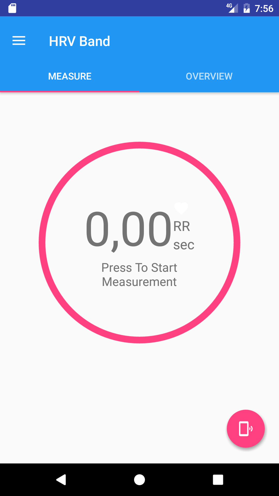
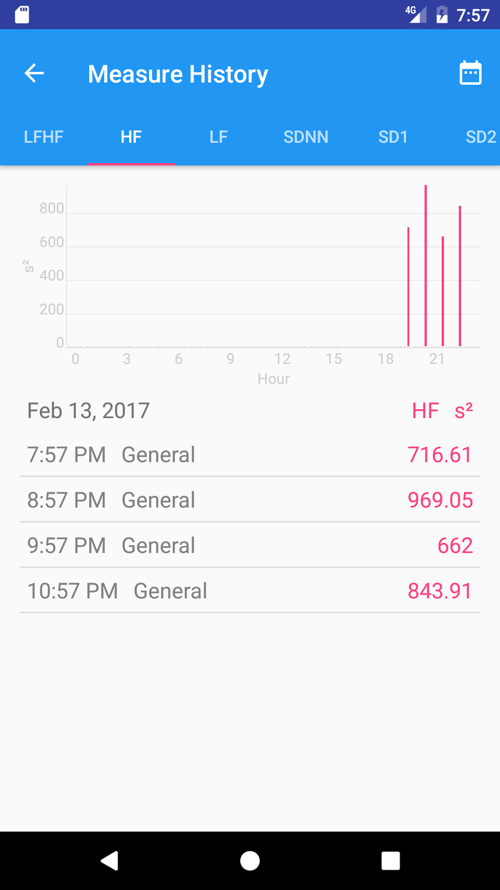

HRV Band Features
Learn all the features of HRV Band and learn how they works!
-

App Start
This is what you will see if you start HRV Band. From here you can explore HRV Band as you like. To start a measurement wear your measurement device and press the measure button.
-
Connect a Device
You can use a bunch of devices which you can find here. To connect your device press the connect button, select your device and follow further instructions.
-
HRV Parameter
After your measurement ends HRV Band shows you a bunch of calculated HRV parameters. Read more here about them.
-

Personalize
You can also personalize your measurement. Rate your measurement, add a category and also a note to it.
-

Monitor
Track your measurements over time. View a specific measurement by selecting it or change the date to view other measurements.
-
Settings
Personalize your experience by changing the measurement time and export your measurements to have a backup or to analyze them with another HRV tool. Find out more.
-
Sample Data
You can also try out some more features without having a supported device by creating sample data and view them.